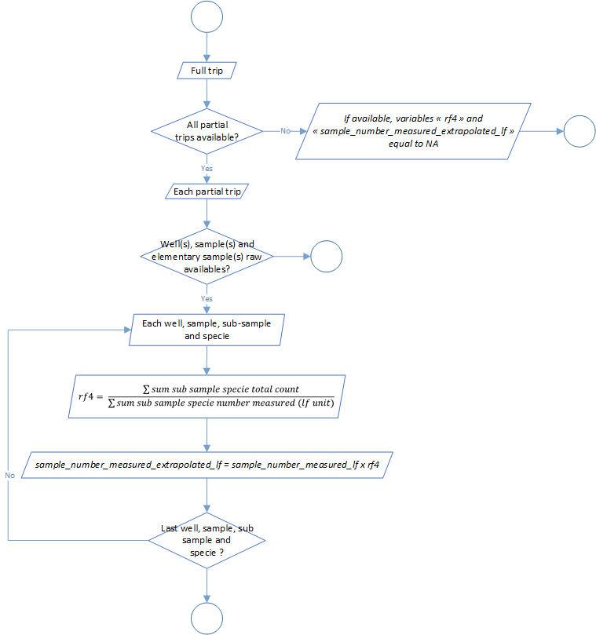
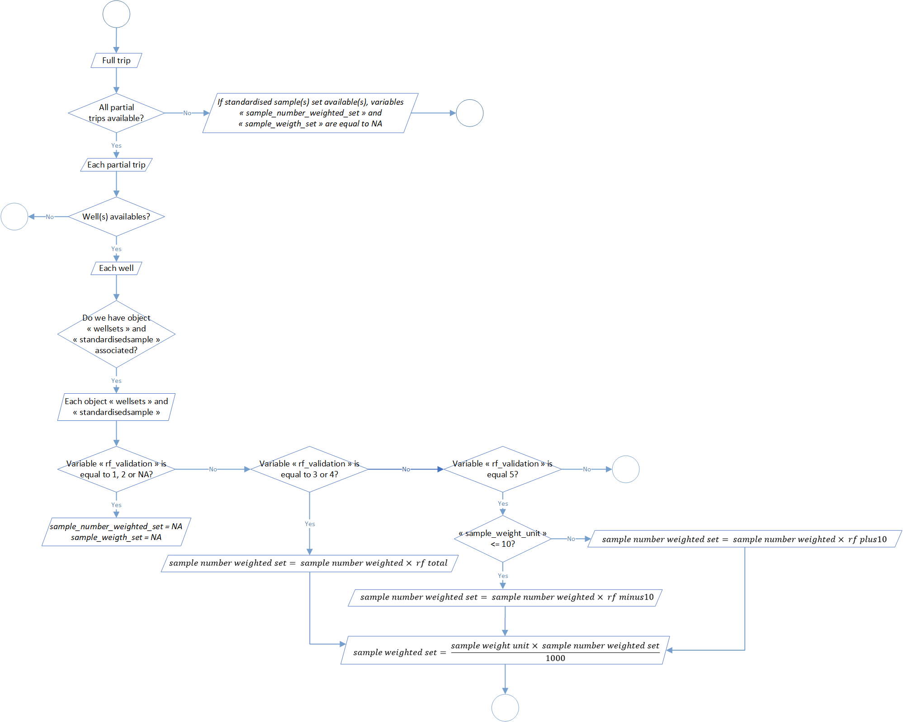

Samples standardisation
The second level of the t3 process aim to standardize samples data. These standardization was divided into 8 steps:
| Process | Code/method associated | Class(es) associated | ||
|---|---|---|---|---|
| Process 2.1: sample length class ld1 to lf conversion | sample_length_class_ld1_to_lf() |
full_trips | ||
| Process 2.2: sample number measured extrapolation | sample_number_measured_extrapolation() |
full_trips | ||
| Process 2.3: sample step length class standardization | sample_length_class_step_standardisation() |
full_trips | ||
| Process 2.4: well set weight categories | well_set_weight_categories() |
full_trips | ||
| Process 2.5: standardized sample creation | standardised_sample_creation() |
full_trips | ||
| Process 2.6: sample number standardization | standardised_sample_set_creation() |
full_trips | ||
| Process 2.7: raised factors determination | raised_factors_determination() |
full_trips | ||
| Process 2.8: samples number standardization at set scale | raised_standardised_sample_set() |
full_trips |
Process 2.1: sample length class LD1 to LF conversion
During the sampling process, fishes length can be collected and expressed in different standards. For example, regarding field constraints and more precisely the length of the different species, sampling data covered in T3 can by express in first dorsal length (LD1) or curved fork length (LF). Generally, length of small individuals are provided in LF because it’s logistically possible and easier to measure the entire fish, while length of bigger individuals are provided in LD1, for the same reciprocal reasons.
This step aim to standardize this standard among sampling data and at the end have only length sampling data expressed in LF. Historical and so far, the process use a referential conversion table LD1 to LF. This table are expressed and used through a stratification by ocean and specie. You can find an example of a part of it in the table 1 below.
| Ocean | Specie | LD1 length class | LF length class | Distribution ratio |
|---|---|---|---|---|
| Atlantic | YFT | 38,0 | 132 | 4 |
| Atlantic | YFT | 38,0 | 134 | 7 |
| Atlantic | YFT | 38,0 | 136 | 16 |
| Atlantic | YFT | 38,0 | 138 | 23 |
| Atlantic | YFT | 38,0 | 140 | 23 |
| Atlantic | YFT | 38,0 | 142 | 16 |
| Atlantic | YFT | 38,0 | 144 | 7 |
| Atlantic | YFT | 38,0 | 146 | 4 |
Like you can see in the table 1, for one LD1 length class we have several LF length classes. That mean that in our data processed the number of sampling item could rise. Furthermore, tunas regional fisheries management organisations, like International Commission for the Conservation of Atlantic Tunas (ICCAT) or the Indian Ocean Tuna Commission (IOTC), have validated conversion factors for types of size measurements. One of our next update will be to modify the process according theses formula.
The global process flowchart is available in the figure 1 below.

Process 2.2: sample number measured extrapolation
During the sampling and according to the protocol, just a part of the sampled individuals are measured in comparison of the one counted. This step aim extrapolate sample number measured individuals to sample number individuals counted.
A Raising Factor (RF4) is calculated stratified by well, sample, sub-sample and specie. He is equal, by stratum, to the sum of each counted individuals divided by the sum of measured individuals (after conversion of measure in curved fork length in the process 2.1).
The global process flowchart is available in the figure 2 below.

Process 2.3: sample step length class standardisation
LF length classes used during the treatment are not necessary the same that filled during the sampling. Furthermore, even if the actual sampling protocol detail what kind of length classes we have to use by specie, it’s not impossible to have differences regarding this length classes if we mix “old data” with the actual one. In addition, it’s possible that the protocol could evolve in the future.
According to that, this step aim to standardize sample length classes. So far, these specifications are integrate in the process:
- a length classes step of 1cm for SKJ (Katsuwonus pelamis), LTA (Euthynnus alletteratus) and FRI (Auxis thazard),
- a length classes step of 2cm for YFT (Thunnus albacares), BET (Thunnus obesus) and ALB (Thunnus alalunga).
The global process flowchart is available in the figure 3 below.

Process 2.4: well set weight categories
The sampling provides information at the well scale. However, a set could be displayed between several wells and sampled individuals could belong to as much as sets in the well.
This process aim to compute a weighted weight, which represents the weight of a set in a well, according to the distribution of this set in all the wells. The overall formula is as follows:
Where WW is the Weighted weight, W1 is the weight of the set in the well, W2 is the weight of the set in all the sampled wells and WT the total set weight.
So far, the process is developed for the purse seiner. To better understand what the process do, take a look to an example. A set of 90 tonnes is display in 3 wells, 40 tonnes in the first one, 30 tonnes in the second and 20 tonnes in the last one. The wells 2 and 3 were sampled but no the first one. For the second well, the weighted weight will be equal to 54 tonnes (30 / 50 x 90). For the third one, the weighted weight will be equal to 36 tonnes (20 / 50 x 90).
Furthermore, a proportion of each sampling sets among the sampling well will be calculated in relation with the weighted weight:
Where PWW is the proportional weighted weight and WWi,j is weighted weight of the current set i in well j.
The global process flowchart is available in the figure 4 below.

Process 2.5: standardised sample creation
This process aims to sum up the samples according to the update made from the processes 2.1 to 2.3 on sample data. In this step we left behind all the notions of subsamples and we take into account the new-sample creation in the step above (for example when we make the conversion to LD1 to LF) and create a new object called standardized sample expressed at the scale of the trip, the well, the sample (id, quality and type) and the specie.
The global process flowchart is available in the figure 5 below.

Process 2.6: sample number standardisation
In the previous process and in the object standardized sample associated, samples is expressed at the well scale. In this step, the aim is to move to the expression of sample by well to sample by set. In the process 2.4, a weighted weight has been calculated and in addition a proportion of this weighted weight at the set scale. By combination of this value and elements of the object standardized sample, a new object called standardized sample set was created. Like explain before, this object is the expression of the sample at the set scale. Furthermore, this process made a conversion of the samples length measurements in weight by length weight relationship. Formula associated are the following one:
Where RWT is the round weight, LF is the curved fork length and parameters a and b comes from a references table and are dependent of of the species and potentially of the area (ocean or others) and the season. More detail information could be find on the regional fisheries management organisations (RFMOs) like ICCAT or IOTC.
In addition, you will find below in the table 2 the reference table for the length weight relationship and global process flowchart in the figure 6.
| Ocean | Specie code | Specie name | a | b |
|---|---|---|---|---|
| Atlantic | YFT | Thunnus albacares | 0,000021527 | 2,976000000 |
| Atlantic | SKJ | Katsuwonus pelamis | 0,000007480 | 3,252600000 |
| Atlantic | BET | Thunnus obesus | 0,000023960 | 2,977400000 |
| Atlantic | ALB | Thunnus alalunga | 0,000013718 | 3,097300000 |
| Atlantic | LTA | Euthynnus alletteratus | 0,000013770 | 3,035000000 |
| Atlantic | FRI | Auxis thazard | 0,000000280 | 4,135140000 |
| Atlantic | SKH | Selachimorpha (Pleurotremata) | 50,000000000 | 0,000000000 |
| Atlantic | BLF | Thunnus atlanticus | 0,000015400 | 3,080000000 |
| Atlantic | BON | Sarda sarda | 0,500000000 | 0,000000000 |
| Atlantic | BLT | Auxis rochei | 0,000007600 | 3,249000000 |
| Atlantic | FRZ | Auxis spp, | 0,000000280 | 4,135140000 |
| Atlantic | WAH | Acanthocybium solandri | 0,000003200 | 3,201000000 |
| Atlantic | MAW | Scomberomorus tritor | 0,500000000 | 0,000000000 |
| Atlantic | KGX | Scomberomorus spp, | 0,500000000 | 0,000000000 |
| Atlantic | SAI | Istiophorus albicans | 0,000004400 | 3,000000000 |
| Atlantic | BLM | Makaira indica | 0,000006500 | 2,960000000 |
| Atlantic | BUM | Makaira nigricans | 0,000003500 | 3,158000000 |
| Atlantic | WHM | Tetrapturus albidus | 0,000004600 | 3,000000000 |
| Atlantic | SPF | Tetrapurus pfluegeri & T, belone | 0,000004400 | 3,000000000 |
| Atlantic | BIL | Istiophoridae spp, | 0,000004400 | 3,000000000 |
| Atlantic | SWO | Xiphias gladius | 0,000007800 | 3,210000000 |
| Indian | YFT | Thunnus albacares | 0,000015849 | 3,046000000 |
| Indian | SKJ | Katsuwonus pelamis | 0,000005320 | 3,349580000 |
| Indian | BET | Thunnus obesus | 0,000027000 | 2,951000000 |
| Indian | ALB | Thunnus alalunga | 0,000006303 | 3,282500000 |
| Indian | LTA | Euthynnus alletteratus | 0,000013770 | 3,035000000 |
| Indian | FRI | Auxis thazard | 0,000000280 | 4,135140000 |
| Indian | SKH | Selachimorpha (Pleurotremata) | 50,000000000 | 0,000000000 |
| Indian | KAW | Euthynnus affinis | 0,000030000 | 2,908000000 |
| Indian | LOT | Thunnus tonggol | 0,000014300 | 3,000000000 |
| Indian | BLT | Auxis rochei | 0,000007600 | 3,249000000 |
| Indian | FRZ | Auxis spp, | 0,000000280 | 4,135140000 |
| Indian | WAH | Acanthocybium solandri | 0,000003200 | 3,201000000 |
| Indian | SFA | Istiophorus platypterus | 0,000016100 | 2,720000000 |
| Indian | BUM | Makaira nigricans | 0,000003500 | 3,158000000 |
| Indian | MLS | Tetrapturus audax | 0,000016500 | 3,062000000 |
| Indian | BIL | Istiophoridae spp, | 0,000004400 | 3,000000000 |
| Indian | SWO | Xiphias gladius | 0,000007800 | 3,210000000 |

Process 2.7: raised factors determination
The step aim to check relevance of the object standardized sample set by calculation of 6 parameters at the scale of each well sets: the number and the weight of sampled individuals, the total value and display by weight categories (<= 10kg or > 10kg).
5 different scenarios are explain in the global flowchart of this process (figure 7). If it’s possible regarding data available, three raising factors are calculated related to the weighted weight of the set and sample weight (total and display by weight categories <= 10kg and > 10kg).
Verification thresholds could be modify in the function parameters
through the arguments threshold_rf_minus10 (by default at
500), threshold_rf_plus10 (by default at 500),
threshold_frequency_rf_minus10 (by default at 75),
threshold_frequency_rf_plus10 (by default at 75) and
threshold_rf_total (by default at 250).

Process 2.8: samples number standardisation at set scale
This last step aim to express number and weight of sampled individuals at the scale of the set. The process use the factors calculated in the process 2.7.
The global process flowchart is available in the figure 8 below.
